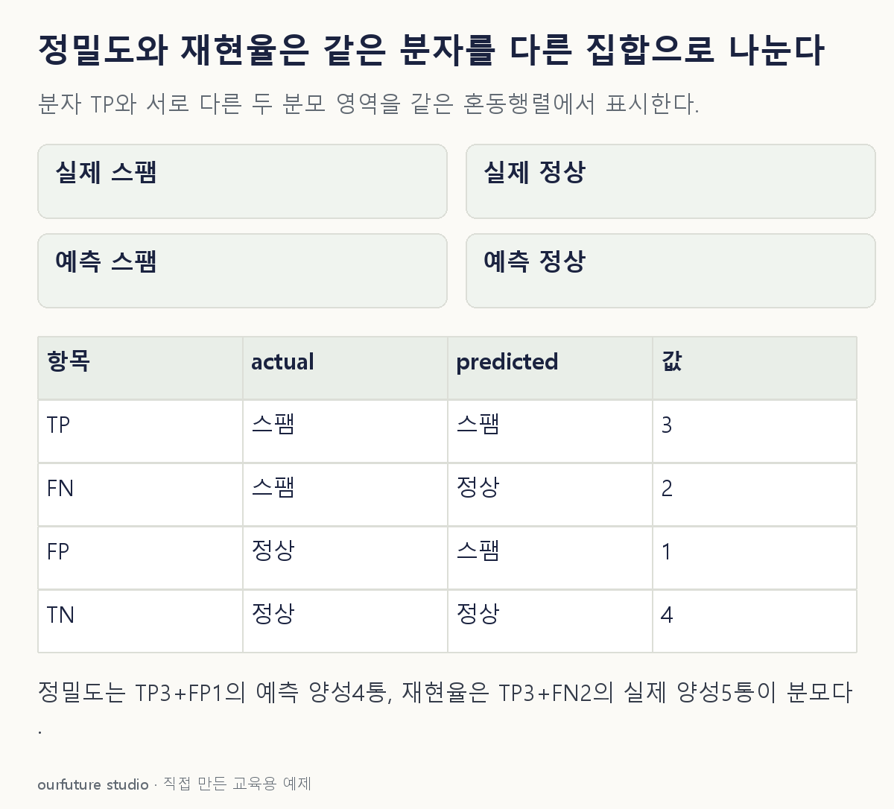

조건을 바꾸며 확인하기
양성=스팸인 도수표 산술이다. zero_division 소프트웨어 설정의 특정 대체값이나 실제 서비스 성능을 대신하지 않는다.
설명 그림과 비교하기
아래 그림과 표는 고정된 설명 예제입니다. 기본·변형 중 어떤 조건인지 캡션을 읽고, 바꾼 입력의 결과는 계산 칸에서 확인하세요.

같은 문제를 직접 골라 보기
양성은 스팸이다. TP=3, FP=1, FN=2, TN=4인 자체 메일 10통의 같은 판정 결과다.
조건을 더 바꾸면?
같은 실제 메일 구성에서 놓친 스팸 1통을 추가로 찾았다. 정상 오경보 1통은 그대로다. 새 정밀도와 재현율은?
변형 풀이 확인
TP=4·FP=1·FN=1·TN=4이므로 둘 다 80%다.
예측 스팸과 실제 스팸의 수가 이번에는 모두 5통이다. 두 지표가 같아졌어도 정의의 분모가 같은 개념으로 바뀐 것은 아니다.
정밀도는 예측한 것, 재현율은 실제인 것부터.